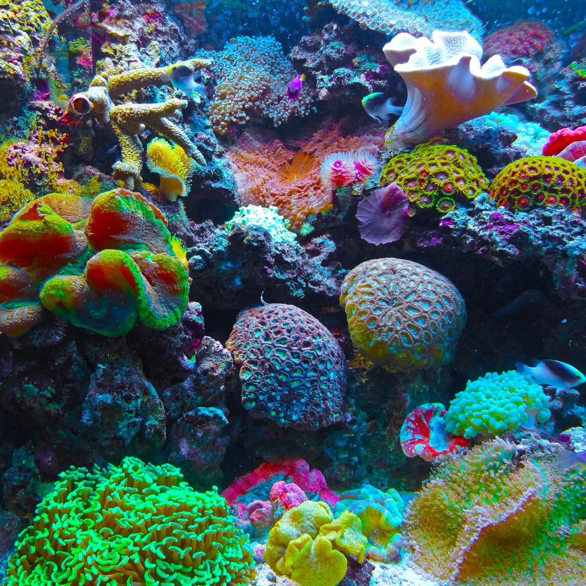
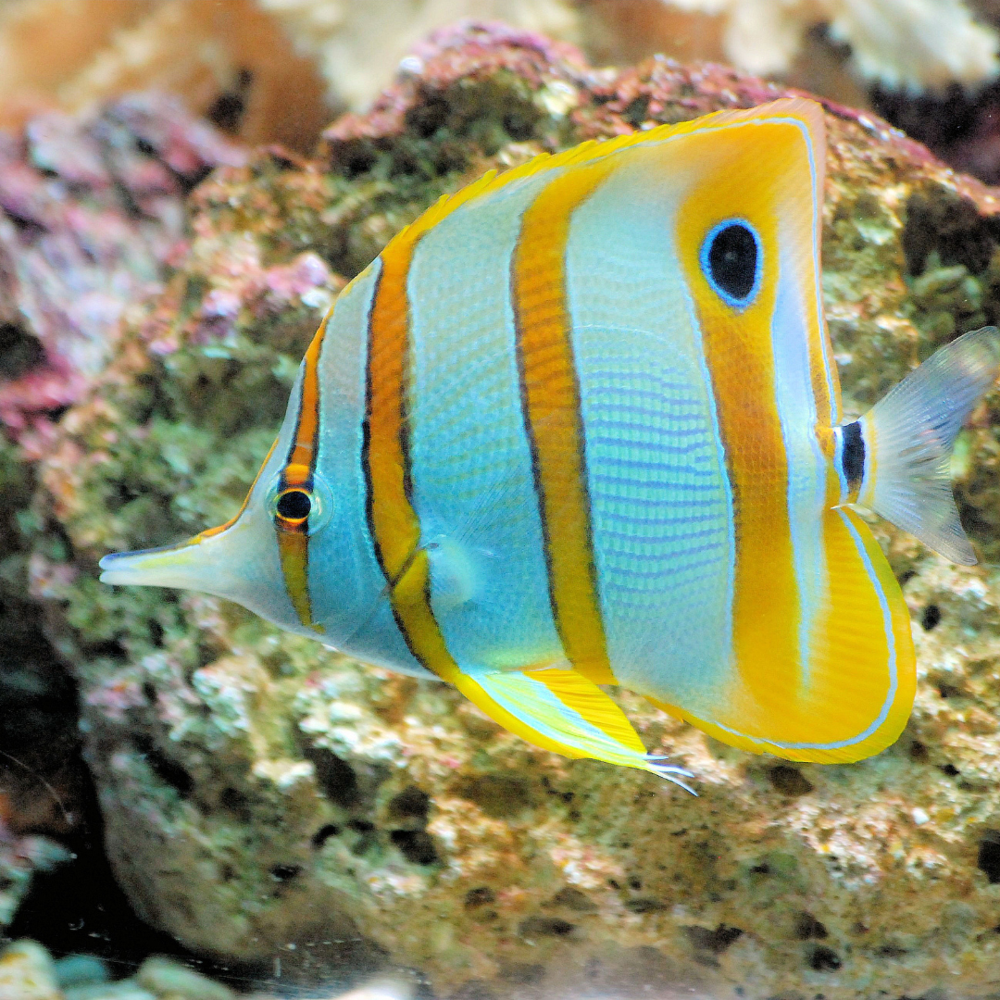
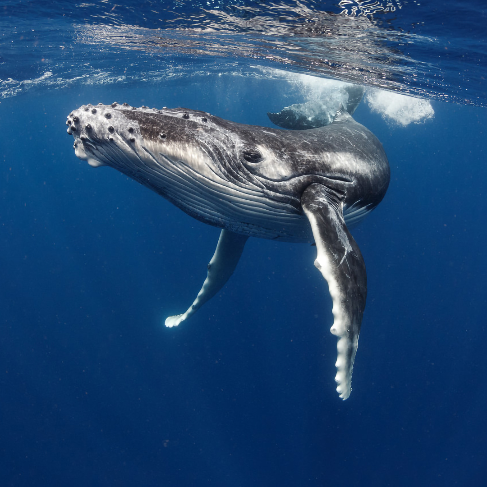
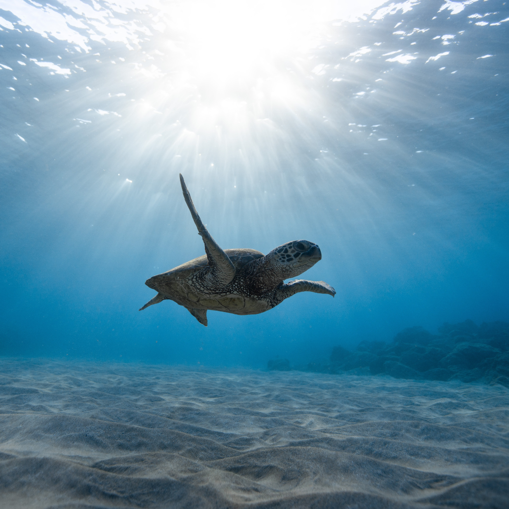

"E disse Deus: Haja um firmamento no meio das águas, e separação entre águas e águas.
E fez Deus o firmamento, e separou as águas que estavam debaixo do firmamento das águas que estavam acima do firmamento; e assim foi." (Gênesis 1:6-7)
Por que os oceanos são essenciais?
Os oceanos cobrem mais de 70% da superfície da Terra e abrigam uma diversidade incrível de vida.
Eles regulam o clima, fornecem oxigênio e sustentam milhões de pessoas em todo o mundo.
Um mundo vibrante de biodiversidade




Protegendo o futuro dos nossos oceanos
8 milhões de toneladas de plástico acabam nos oceanos todos os anos.
90% das grandes espécies marinhas estão sobre-exploradas.
Você pode me patrocinar para apoiar meu trabalho de código aberto? 💖